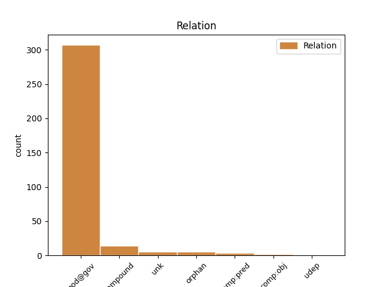
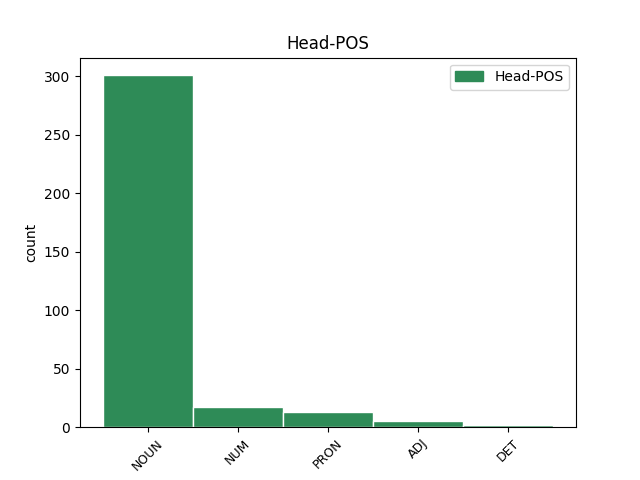
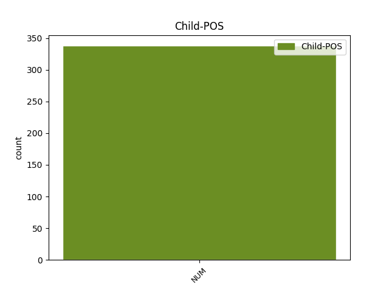

Distribution of features within this leaf



Agreement Rules sorted by frequency.
- When the dependent token is the modifer(mod@gov) of the head token, and the head token is NOUN and the dependent token is NUM.
1 Je _ _ _ _ 0 _ _ _
2 to _ _ _ _ 0 _ _ _
3 potřebné _ _ _ _ 0 _ _ _
4 proto _ _ _ _ 0 _ _ _
5 , _ _ _ _ 0 _ _ _
6 že _ _ _ _ 0 _ _ _
7 pomocí _ _ _ _ 0 _ _ _
8 problému _ _ _ _ 0 _ _ _
9 těles _ _ _ _ 0 _ _ _
10 se _ _ _ _ 0 _ _ _
11 někteří _ _ _ _ 0 _ _ _
12 pracovníci _ _ _ _ 0 _ _ _
13 snaží _ _ _ _ 0 _ _ _
14 vysvětlit _ _ _ _ 0 _ _ _
15 vlastnosti _ _ _ _ 0 _ _ _
16 některých _ _ _ _ 0 _ _ _
17 hvězdných _ _ _ _ 0 _ _ _
18 soustav _ _ _ _ 0 _ _ _
19 , _ _ _ _ 0 _ _ _
20 kde _ _ _ _ 0 _ _ _
21 jsme _ _ _ _ 0 _ _ _
22 svědky _ _ _ _ 0 _ _ _
23 realizace _ _ _ _ 0 _ _ _
24 problému _ _ _ _ 0 _ _ _
25 set sto NUM ClXP2---------- Case=Gen|Number=Plur|NumForm=Word|NumType=Card|NumValue=1,2,3 32 mod@gov _ LId=sto-1|LNumValue=100|SpaceAfter=No
26 , _ _ _ _ 0 _ _ _
27 tisíců _ _ _ _ 0 _ _ _
28 nebo _ _ _ _ 0 _ _ _
29 i _ _ _ _ 0 _ _ _
30 mnoha _ _ _ _ 0 _ _ _
31 miliard _ _ _ _ 0 _ _ _
32 těles těleso NOUN NNNP2-----A---- Case=Gen|Gender=Neut|Number=Plur|Polarity=Pos 0 _ _ _
33 . _ _ _ _ 0 _ _ _
1 Je _ _ _ _ 0 _ _ _
2 přirozené _ _ _ _ 0 _ _ _
3 , _ _ _ _ 0 _ _ _
4 že _ _ _ _ 0 _ _ _
5 dnes _ _ _ _ 0 _ _ _
6 , _ _ _ _ 0 _ _ _
7 po _ _ _ _ 0 _ _ _
8 odstupu _ _ _ _ 0 _ _ _
9 třiceti třicet NUM Cn-P2---------- Case=Gen|Number=Plur|NumForm=Word|NumType=Card 0 _ _ _
10 pěti pět NUM Cn-P2---------- Case=Gen|Number=Plur|NumForm=Word|NumType=Card 9 compound _ LId=pět-1|LNumValue=5
11 let _ _ _ _ 0 _ _ _
12 , _ _ _ _ 0 _ _ _
13 * _ _ _ _ 0 _ _ _
14 přibylo _ _ _ _ 0 _ _ _
15 . _ _ _ _ 0 _ _ _
1 Spánkový _ _ _ _ 0 _ _ _
2 útlum _ _ _ _ 0 _ _ _
3 , _ _ _ _ 0 _ _ _
4 jenž _ _ _ _ 0 _ _ _
5 při _ _ _ _ 0 _ _ _
6 normálním _ _ _ _ 0 _ _ _
7 usínání _ _ _ _ 0 _ _ _
8 těmito _ _ _ _ 0 _ _ _
9 fázemi _ _ _ _ 0 _ _ _
10 pouze _ _ _ _ 0 _ _ _
11 rychle _ _ _ _ 0 _ _ _
12 proběhne _ _ _ _ 0 _ _ _
13 , _ _ _ _ 0 _ _ _
14 se _ _ _ _ 0 _ _ _
15 při _ _ _ _ 0 _ _ _
16 hypnóze _ _ _ _ 0 _ _ _
17 na _ _ _ _ 0 _ _ _
18 některé _ _ _ _ 0 _ _ _
19 fázi _ _ _ _ 0 _ _ _
20 zastaví _ _ _ _ 0 _ _ _
21 nebo _ _ _ _ 0 _ _ _
22 fáze fáze NOUN NNFP1-----A---- Case=Nom|Gender=Fem|Number=Plur|Polarity=Pos 0 _ _ _
23 jedna jeden NUM ClFS1---------- Case=Nom|Gender=Fem|Number=Sing|NumForm=Word|NumType=Card|NumValue=1,2,3 22 comp:pred _ LNumValue=1
24 druhou _ _ _ _ 0 _ _ _
25 střídají _ _ _ _ 0 _ _ _
26 . _ _ _ _ 0 _ _ _
1 Mají _ _ _ _ 0 _ _ _
2 široký _ _ _ _ 0 _ _ _
3 sortiment _ _ _ _ 0 _ _ _
4 borovic _ _ _ _ 0 _ _ _
5 , _ _ _ _ 0 _ _ _
6 v _ _ _ _ 0 _ _ _
7 současné _ _ _ _ 0 _ _ _
8 době _ _ _ _ 0 _ _ _
9 jich on PRON PPXP2--3------- Case=Gen|Number=Plur|Person=3|PronType=Prs 0 _ _ _
10 množí _ _ _ _ 0 _ _ _
11 # _ _ _ _ 0 _ _ _
12 tisíc tisíc NUM ClXS2---------- Case=Gen|Number=Sing|NumForm=Word|NumType=Card|NumValue=1,2,3 9 mod@gov _ LId=tisíc-1|LNumValue=1000|SpaceAfter=No
13 . _ _ _ _ 0 _ _ _
1 Hoď _ _ _ _ 0 _ _ _
2 dva dva NUM ClYP1---------- Case=Nom|Gender=Masc|Number=Plur|NumForm=Word|NumType=Card|NumValue=1,2,3 0 _ _ _
3 běž _ _ _ _ 0 _ _ _
4 čtyři _ _ _ _ 0 _ _ _
5 stůj _ _ _ _ 0 _ _ _
6 dva _ _ _ _ 0 _ _ _
7 dřep _ _ _ _ 0 _ _ _
8 čtyři čtyři NUM ClXP1---------- Case=Nom|Number=Plur|NumForm=Word|NumType=Card|NumValue=1,2,3 2 orphan _ LNumValue=4|SpaceAfter=No
9 , _ _ _ _ 0 _ _ _
10 celkem _ _ _ _ 0 _ _ _
11 # _ _ _ _ 0 _ _ _
12 dob _ _ _ _ 0 _ _ _
13 . _ _ _ _ 0 _ _ _
1 Třicet _ _ _ _ 0 _ _ _
2 tisíc _ _ _ _ 0 _ _ _
3 čtverečných _ _ _ _ 0 _ _ _
4 metrů _ _ _ _ 0 _ _ _
5 bezprašných _ _ _ _ 0 _ _ _
6 komunikací _ _ _ _ 0 _ _ _
7 , _ _ _ _ 0 _ _ _
8 dva dva NUM ClYP1---------- Case=Nom|Gender=Masc|Number=Plur|NumForm=Word|NumType=Card|NumValue=1,2,3 9 unk _ LNumValue=2
9 velké velký ADJ AAIP1----1A---- Animacy=Inan|Case=Nom|Degree=Pos|Gender=Masc|Number=Plur|Polarity=Pos 0 _ _ _
10 a _ _ _ _ 0 _ _ _
11 šest _ _ _ _ 0 _ _ _
12 malých _ _ _ _ 0 _ _ _
13 parků _ _ _ _ 0 _ _ _
14 , _ _ _ _ 0 _ _ _
15 sedmdesátimilimetrové _ _ _ _ 0 _ _ _
16 kino _ _ _ _ 0 _ _ _
17 , _ _ _ _ 0 _ _ _
18 panoráma _ _ _ _ 0 _ _ _
19 , _ _ _ _ 0 _ _ _
20 jedno _ _ _ _ 0 _ _ _
21 z _ _ _ _ 0 _ _ _
22 nejlepších _ _ _ _ 0 _ _ _
23 v _ _ _ _ 0 _ _ _
24 republice _ _ _ _ 0 _ _ _
25 , _ _ _ _ 0 _ _ _
26 prodejny _ _ _ _ 0 _ _ _
27 gramodesek _ _ _ _ 0 _ _ _
28 , _ _ _ _ 0 _ _ _
29 dětských _ _ _ _ 0 _ _ _
30 oděvů _ _ _ _ 0 _ _ _
31 a _ _ _ _ 0 _ _ _
32 potravin _ _ _ _ 0 _ _ _
33 , _ _ _ _ 0 _ _ _
34 benzínové _ _ _ _ 0 _ _ _
35 čerpadlo _ _ _ _ 0 _ _ _
36 , _ _ _ _ 0 _ _ _
37 pláž _ _ _ _ 0 _ _ _
38 u _ _ _ _ 0 _ _ _
39 rybníka _ _ _ _ 0 _ _ _
40 . _ _ _ _ 0 _ _ _
1 Všechny _ _ _ _ 0 _ _ _
2 ostatní _ _ _ _ 0 _ _ _
3 jednotky _ _ _ _ 0 _ _ _
4 lze _ _ _ _ 0 _ _ _
5 odvodit _ _ _ _ 0 _ _ _
6 z _ _ _ _ 0 _ _ _
7 těchto tento DET PDXP2---------- Case=Gen|Number=Plur|PronType=Dem 0 _ _ _
8 čtyř čtyři NUM ClXP2---------- Case=Gen|Number=Plur|NumForm=Word|NumType=Card|NumValue=1,2,3 7 unk _ LNumValue=4|SpaceAfter=No
9 , _ _ _ _ 0 _ _ _
10 a _ _ _ _ 0 _ _ _
11 tím _ _ _ _ 0 _ _ _
12 je _ _ _ _ 0 _ _ _
13 tedy _ _ _ _ 0 _ _ _
14 naše _ _ _ _ 0 _ _ _
15 zpráva _ _ _ _ 0 _ _ _
16 doplněna _ _ _ _ 0 _ _ _
17 o _ _ _ _ 0 _ _ _
18 příslušná _ _ _ _ 0 _ _ _
19 měřítka _ _ _ _ 0 _ _ _
20 . _ _ _ _ 0 _ _ _
1 Zpracovatelské _ _ _ _ 0 _ _ _
2 kapacity _ _ _ _ 0 _ _ _
3 jsou _ _ _ _ 0 _ _ _
4 charakterizovány _ _ _ _ 0 _ _ _
5 základní _ _ _ _ 0 _ _ _
6 technologickou _ _ _ _ 0 _ _ _
7 skladbou _ _ _ _ 0 _ _ _
8 strojů _ _ _ _ 0 _ _ _
9 a _ _ _ _ 0 _ _ _
10 zařízení _ _ _ _ 0 _ _ _
11 vyjádřenou vyjádřený ADJ AAFS7----1A---- Case=Ins|Degree=Pos|Gender=Fem|Number=Sing|Polarity=Pos 0 _ _ _
12 zhruba _ _ _ _ 0 _ _ _
13 třetinou třetina NUM CyFS7---------- Case=Ins|Gender=Fem|Number=Sing|NumType=Frac 11 udep _ _
14 pro _ _ _ _ 0 _ _ _
15 oplášťování _ _ _ _ 0 _ _ _
16 kabelů _ _ _ _ 0 _ _ _
17 , _ _ _ _ 0 _ _ _
18 třetinou _ _ _ _ 0 _ _ _
19 pro _ _ _ _ 0 _ _ _
20 vstřikování _ _ _ _ 0 _ _ _
21 a _ _ _ _ 0 _ _ _
22 # _ _ _ _ 0 _ _ _
23 činí _ _ _ _ 0 _ _ _
24 lisování _ _ _ _ 0 _ _ _
25 a _ _ _ _ 0 _ _ _
26 protlačování _ _ _ _ 0 _ _ _
27 . _ _ _ _ 0 _ _ _
Disagree Examples:
1 Odklízení _ _ _ _ 0 _ _ _
2 sněhu _ _ _ _ 0 _ _ _
3 z _ _ _ _ 0 _ _ _
4 teras _ _ _ _ 0 _ _ _
5 a _ _ _ _ 0 _ _ _
6 balkónů _ _ _ _ 0 _ _ _
7 smluvně _ _ _ _ 0 _ _ _
8 přidělených přidělený ADJ AAIP2----1A---- Animacy=Inan|Case=Gen|Degree=Pos|Gender=Masc|Number=Plur|Polarity=Pos 0 _ _ _
9 k _ _ _ _ 0 _ _ _
10 výhradnímu _ _ _ _ 0 _ _ _
11 užívání _ _ _ _ 0 _ _ _
12 jednomu jeden NUM ClZS3---------- Case=Dat|Gender=Masc,Neut|Number=Sing|NumForm=Word|NumType=Card|NumValue=1,2,3 8 unk _ LNumValue=1
13 nebo _ _ _ _ 0 _ _ _
14 více _ _ _ _ 0 _ _ _
15 uživatelům _ _ _ _ 0 _ _ _
16 je _ _ _ _ 0 _ _ _
17 povinností _ _ _ _ 0 _ _ _
18 těchto _ _ _ _ 0 _ _ _
19 uživatelů _ _ _ _ 0 _ _ _
20 . _ _ _ _ 0 _ _ _
1 Žijí _ _ _ _ 0 _ _ _
2 a _ _ _ _ 0 _ _ _
3 pracují _ _ _ _ 0 _ _ _
4 podle _ _ _ _ 0 _ _ _
5 zásady zásada NOUN NNFS2-----A---- Case=Gen|Gender=Fem|Number=Sing|Polarity=Pos 0 _ _ _
6 " _ _ _ _ 0 _ _ _
7 jeden jeden NUM ClYS1---------- Case=Nom|Gender=Masc|Number=Sing|NumForm=Word|NumType=Card|NumValue=1,2,3 5 unk _ LNumValue=1
8 za _ _ _ _ 0 _ _ _
9 všechny _ _ _ _ 0 _ _ _
10 , _ _ _ _ 0 _ _ _
11 všichni _ _ _ _ 0 _ _ _
12 za _ _ _ _ 0 _ _ _
13 jednoho _ _ _ _ 0 _ _ _
14 " _ _ _ _ 0 _ _ _
15 , _ _ _ _ 0 _ _ _
16 každý _ _ _ _ 0 _ _ _
17 se _ _ _ _ 0 _ _ _
18 cítí _ _ _ _ 0 _ _ _
19 odpovědným _ _ _ _ 0 _ _ _
20 za _ _ _ _ 0 _ _ _
21 všechno _ _ _ _ 0 _ _ _
22 , _ _ _ _ 0 _ _ _
23 co _ _ _ _ 0 _ _ _
24 se _ _ _ _ 0 _ _ _
25 děje _ _ _ _ 0 _ _ _
26 v _ _ _ _ 0 _ _ _
27 brigádě _ _ _ _ 0 _ _ _
28 . _ _ _ _ 0 _ _ _
1 Při _ _ _ _ 0 _ _ _
2 příležitosti _ _ _ _ 0 _ _ _
3 Vašeho _ _ _ _ 0 _ _ _
4 odchodu _ _ _ _ 0 _ _ _
5 na _ _ _ _ 0 _ _ _
6 zasloužený _ _ _ _ 0 _ _ _
7 odpočinek _ _ _ _ 0 _ _ _
8 dovoluji _ _ _ _ 0 _ _ _
9 si _ _ _ _ 0 _ _ _
10 vysloviti _ _ _ _ 0 _ _ _
11 Vám _ _ _ _ 0 _ _ _
12 jménem _ _ _ _ 0 _ _ _
13 svým _ _ _ _ 0 _ _ _
14 i _ _ _ _ 0 _ _ _
15 jménem _ _ _ _ 0 _ _ _
16 celého _ _ _ _ 0 _ _ _
17 kolektivu _ _ _ _ 0 _ _ _
18 vedení _ _ _ _ 0 _ _ _
19 závodu _ _ _ _ 0 _ _ _
20 upřímné _ _ _ _ 0 _ _ _
21 poděkování _ _ _ _ 0 _ _ _
22 za _ _ _ _ 0 _ _ _
23 všechnu _ _ _ _ 0 _ _ _
24 práci _ _ _ _ 0 _ _ _
25 , _ _ _ _ 0 _ _ _
26 kterou _ _ _ _ 0 _ _ _
27 jste _ _ _ _ 0 _ _ _
28 tak _ _ _ _ 0 _ _ _
29 obětavě _ _ _ _ 0 _ _ _
30 a _ _ _ _ 0 _ _ _
31 svědomitě _ _ _ _ 0 _ _ _
32 vykonávala _ _ _ _ 0 _ _ _
33 devatenáct devatenáct NUM Cn-S4---------- Case=Acc|Number=Sing|NumForm=Word|NumType=Card 34 mod@gov _ LNumValue=19
34 let rok NOUN NNNP2-----A---- Case=Gen|Gender=Neut|Number=Plur|Polarity=Pos 0 _ _ _
35 pro _ _ _ _ 0 _ _ _
36 náš _ _ _ _ 0 _ _ _
37 závod _ _ _ _ 0 _ _ _
38 , _ _ _ _ 0 _ _ _
39 a _ _ _ _ 0 _ _ _
40 tím _ _ _ _ 0 _ _ _
41 i _ _ _ _ 0 _ _ _
42 pro _ _ _ _ 0 _ _ _
43 celý _ _ _ _ 0 _ _ _
44 podnik _ _ _ _ 0 _ _ _
45 a _ _ _ _ 0 _ _ _
46 naše _ _ _ _ 0 _ _ _
47 národní _ _ _ _ 0 _ _ _
48 hospodářství _ _ _ _ 0 _ _ _
49 . _ _ _ _ 0 _ _ _
1 Podle _ _ _ _ 0 _ _ _
2 Vaší _ _ _ _ 0 _ _ _
3 nabídky _ _ _ _ 0 _ _ _
4 a _ _ _ _ 0 _ _ _
5 připojeného _ _ _ _ 0 _ _ _
6 popisu _ _ _ _ 0 _ _ _
7 objednáváme _ _ _ _ 0 _ _ _
8 devatenáct devatenáct NUM Cn-S4---------- Case=Acc|Number=Sing|NumForm=Word|NumType=Card 9 mod@gov _ LNumValue=19
9 stanů stan NOUN NNIP2-----A---- Animacy=Inan|Case=Gen|Gender=Masc|Number=Plur|Polarity=Pos 0 _ _ _
10 ze _ _ _ _ 0 _ _ _
11 zelené _ _ _ _ 0 _ _ _
12 celtoviny _ _ _ _ 0 _ _ _
13 Titan _ _ _ _ 0 _ _ _
14 s _ _ _ _ 0 _ _ _
15 pevnou _ _ _ _ 0 _ _ _
16 podlahou _ _ _ _ 0 _ _ _
17 a _ _ _ _ 0 _ _ _
18 postranicemi _ _ _ _ 0 _ _ _
19 po _ _ _ _ 0 _ _ _
20 * _ _ _ _ 0 _ _ _
21 . _ _ _ _ 0 _ _ _
1 Vedle _ _ _ _ 0 _ _ _
2 dosavadního _ _ _ _ 0 _ _ _
3 zařazení _ _ _ _ 0 _ _ _
4 a _ _ _ _ 0 _ _ _
5 platu _ _ _ _ 0 _ _ _
6 u _ _ _ _ 0 _ _ _
7 nich _ _ _ _ 0 _ _ _
8 napište _ _ _ _ 0 _ _ _
9 stručné _ _ _ _ 0 _ _ _
10 zdůvodnění _ _ _ _ 0 _ _ _
11 pro _ _ _ _ 0 _ _ _
12 přeřazení _ _ _ _ 0 _ _ _
13 , _ _ _ _ 0 _ _ _
14 stačí _ _ _ _ 0 _ _ _
15 půl půl NUM ClXS1---------- Case=Nom|Number=Sing|NumForm=Word|NumType=Card|NumValue=1,2,3 16 mod@gov _ LId=půl-1
16 stránky stránka NOUN NNFS2-----A---- Case=Gen|Gender=Fem|Number=Sing|Polarity=Pos 0 _ _ _
17 , _ _ _ _ 0 _ _ _
18 které _ _ _ _ 0 _ _ _
19 bude _ _ _ _ 0 _ _ _
20 předloženo _ _ _ _ 0 _ _ _
21 atestační _ _ _ _ 0 _ _ _
22 komisi _ _ _ _ 0 _ _ _
23 * _ _ _ _ 0 _ _ _
24 jazykovědu _ _ _ _ 0 _ _ _
25 k _ _ _ _ 0 _ _ _
26 předběžnému _ _ _ _ 0 _ _ _
27 projednání _ _ _ _ 0 _ _ _
28 , _ _ _ _ 0 _ _ _
29 přesné _ _ _ _ 0 _ _ _
30 pokyny _ _ _ _ 0 _ _ _
31 pro _ _ _ _ 0 _ _ _
32 úpravu _ _ _ _ 0 _ _ _
33 definitivních _ _ _ _ 0 _ _ _
34 návrhů _ _ _ _ 0 _ _ _
35 předkládaných _ _ _ _ 0 _ _ _
36 atestační _ _ _ _ 0 _ _ _
37 komisi _ _ _ _ 0 _ _ _
38 ČSAV _ _ _ _ 0 _ _ _
39 budou _ _ _ _ 0 _ _ _
40 včas _ _ _ _ 0 _ _ _
41 dodány _ _ _ _ 0 _ _ _
42 . _ _ _ _ 0 _ _ _